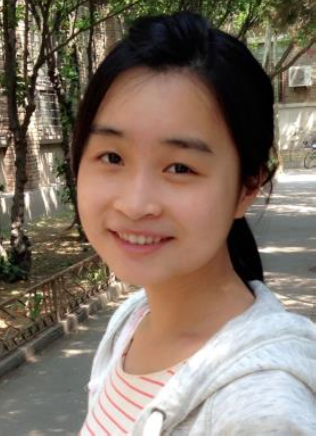

xiaoxue@tju.edu.cn
http://huangxiaoxue.com

China Citizen, Ph.D. Mechanical Engineering
Department Key Laboratory of Low-Medium Temperature Energy Efficient Utilization
Institution Tianjin University
Degree 2nd year Ph.D student (09/2013 - 07/2016, expected)
Supervisor Professor Zhu Jialing, director of geothermal research & training center
Sex Female | Date of birth 17/11/1991 | Nationality P.R. China